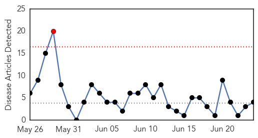
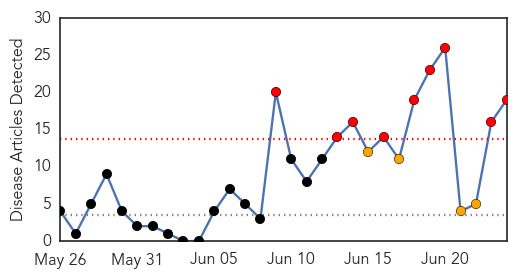
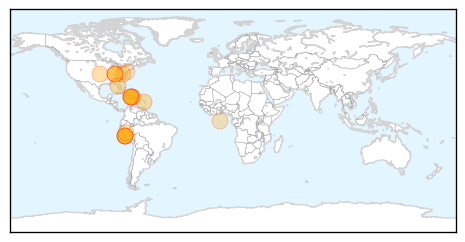
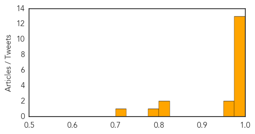

Cholera
30-Day Web Trend
1 alerts, 0 warnings

30-Day Twitter Trend
0 alerts, 0 warnings

Article Locations

Article Confidences

Top Articles:
Top Tweets:
- 0.887
- RT: A new, inexpensive, easy-to-use cholera vaccine worked very well during a cholera outbreak in Africa http://t.co/TKwv6…
Chikungunya
30-Day Web Trend
9 alerts, 4 warnings

30-Day Twitter Trend
0 alerts, 0 warnings

Article Locations
Article Confidences
Top Articles:
- 0.999
- Florida: Travel-associated Chikungunya cases increase by six
- 0.997
- Chikungunya virus spreads to Peru
- 0.997
- Alabama has first reported case of Chikungunya virus
- 0.997
- Chikungunya virus spreads to Peru
- 0.996
- Kentucky Department of Public Health confirms 1st case of chikungunya virus
- 0.996
- Chikungunya fever confirmed in Peru
- 0.996
- Chikungunya Virus Spreads to Peru — Naharnet
- 0.996
- Caribbean Travel Health Alert: Untreatable mosquito-borne virus threatens tourism
- 0.995
- Chikungunya virus spreads to Peru - Peru
- 0.991
- Mosquito-borne illness confirmed in Kentucky
- 0.991
- Mosquito-borne virus confirmed in Kentuckian who visited Haiti
- 0.988
- Health officials warn travelers of mosquito-borne virus
- 0.984
- 1st case of mosquito-borne chikungunya disease in Polk County
- 0.968
- Peru: Chikungunya virus spreads to Peru
- 0.955
- Mississippi confirms first case of mosquito-borne chikungunya virus
- 0.822
- Health officials caution to prevent mosquito breeding and bites
- 0.816
- Kentucky confirms first case of Chik-V virus
- 0.783
- Mosquito-Borne Illness Confirmed in Kentucky
- 0.700
- Chikungunya case confirmed in Kentuckian who traveled abroad recently
Top Tweets:
-
No tweets found for Jun 24, 2014